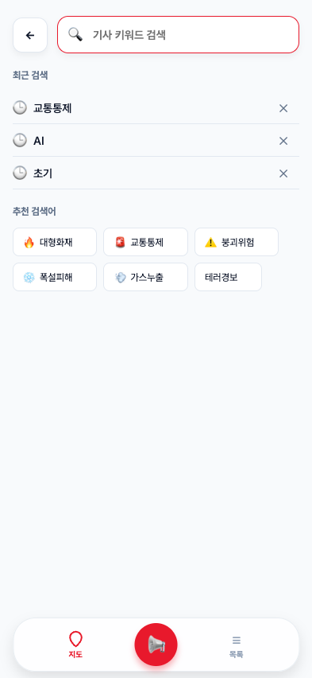
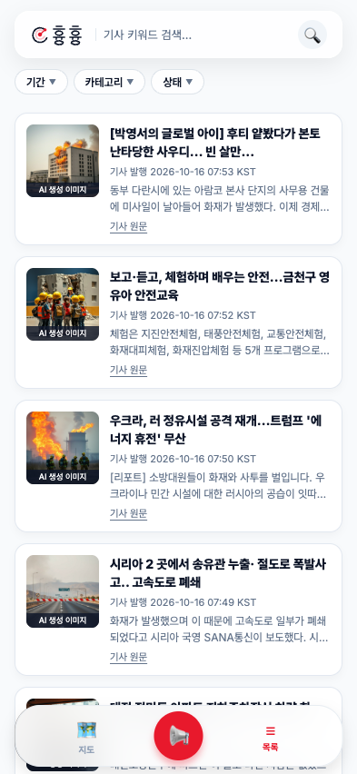
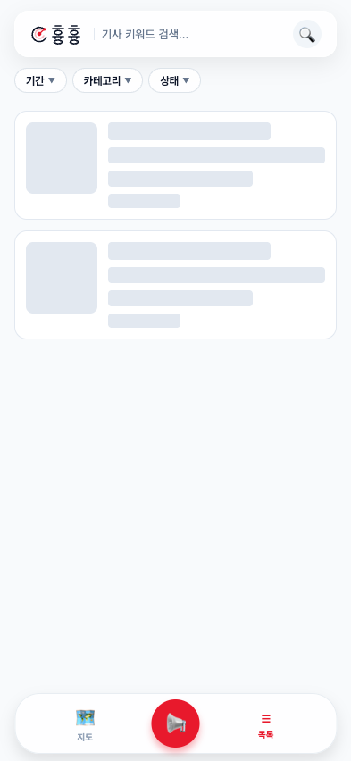

<!doctype html><html lang="ko"><meta charset="utf-8"><style>body{margin:0;background:#eef2f6;font-family:system-ui,sans-serif;color:#0f172a}main{display:flex;gap:20px;padding:24px}figure{margin:0;width:393px;flex:none}figcaption{font-size:16px;font-weight:700;margin:0 0 12px 4px}img{display:block;width:393px;height:852px;border-radius:18px;box-shadow:0 6px 20px #0f172a16}</style><main><figure><figcaption>검색 · 입력창과 추천 키워드 간격</figcaption></figure><figure><figcaption>목록 · 카드와 본문 줄간격</figcaption></figure><figure><figcaption>로딩 · 기사 카드 스켈레톤</figcaption></figure></main></html>